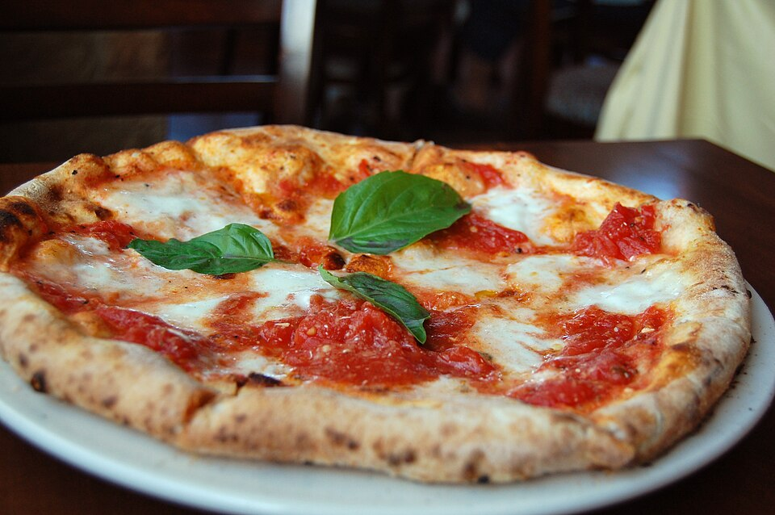

Neighborhood Soul
We cherish our location on Middleton Drive, serving as a trusted dining retreat for Myers Park families, couples, and regulars who return week after week.
In Italian, "Zio" means "Uncle"—evoking the warm, generous family dinners of our heritage where everyone is welcomed, portions are hearty, and the wine flows freely. Located in a quaint former home on Middleton Drive, Zio was created to bring the effortless rustic elegance of an Italian neighborhood trattoria to Charlotte.

Commitment to Italian technique, scratch cooking, and neighborhood intimacy.
We cherish our location on Middleton Drive, serving as a trusted dining retreat for Myers Park families, couples, and regulars who return week after week.
From our 48-hour cold-fermented pizza dough to hand-rolled meatballs and slow-simmered bolognese, every dish is crafted in-house without industrial shortcuts.
Our patio herb boxes aren't merely decorative—they supply the sweet basil, fragrant oregano, and rosemary that scent our sauces and pizzas every evening.
Our outdoor garden patio is one of Charlotte’s most enchanting dining spaces. Sheltered beneath overhead pergola greenery and bistro string lights, surrounded by aromatic herb planters, guests sip chilled Italian pinot grigio and share hot grilled pizzas as the Carolina evening gently cools.
Garden Patio Guidelines →